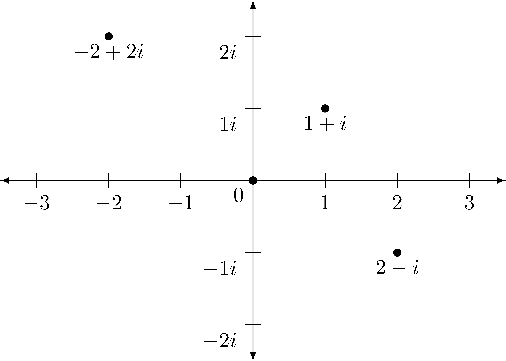
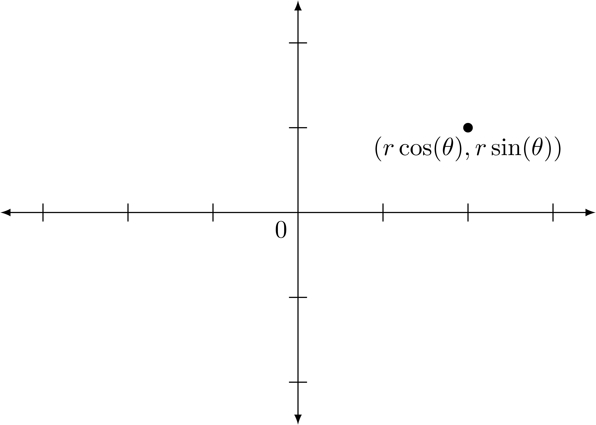

4.6 Complex Numbers
Unlike all of the previous number system constructions, in order to construct the complex numbers, \(\mathbb{C}\), we do not have to work through equivalence classes. Instead, we look at the set \[\mathbb{R} \times \mathbb{R} = \left\{ (x,y) \middle \vert x,y \in \mathbb{R}\right\}\] and define the addition and multiplication operations as \[(a,b) + (c,d) = (a+c, b+d) \quad \mbox{ and } \quad (a,b) \cdot (c,d) = (ac-bd, ad+bc).\]
We can see that elements of the form \((a,0)\), \(\mathbb{R}\times \{0\}\), act just like the real numbers in that \[(a,0)+(b,0)=(a+b,0) \quad \mbox{ and } \quad (a,0)\cdot (b,0) = (ab,0)\] and so we can think of these as being the real numbers inside of the complex numbers.
Elements of the form \((0,a)\), \(\{0\}\times \mathbb{R}\), operate very differently, particularly with regard to multiplication, since \[(0,a)+(0,b)=(0,a+b) \quad \mbox{ and } (0,a) \cdot (0,b) = (-ab,0).\]
4.6.1 Rectangular Representation
If we define scalar multiplication on this set by \(k \cdot (a,b) = (ka,kb)\), we see that the elements of the set \(\mathbb{R} \times \mathbb{R}\) operate as a vector space in that for all \((a,b) \in \mathbb{R}\times \mathbb{R}\), \((a,b) = a \cdot (1,0) + b \cdot (0,1)\). If we then replace \((1,0)\) with its corresponding element of \(1\) in \(\mathbb{R}\) and label \(0,1\) with a new symbol that we call \(i\), we have the complex numbers, \[\mathbb{C} = \left\{ a+bi\middle \vert a, b\in \mathbb{R}\right\}\] with addition and multiplication defined by \[(a+bi) + (c+di) = (a+c) + (b+d)i \quad \mbox{ and } \quad (a+bi) \cdot (c+di) = (ac-bd) + (ad+bc)i.\]
Related Content Standards
- (HSN.CN.1) Know there is a complex number \(i\) such that \(i^2 = -1\), and every complex number has the form \(a + bi\) with \(a\) and \(b\) real.
- (HSN.CN.2) Use the relation \(i^2 = -1\) and the commutative, associative, and distributive properties to add, subtract, and multiply complex numbers.
In the eighth chapter of the greatest work of mathematics in the 18th century, possibly even in the modern era, Leonard Euler (1748) described a geometric, algebraic, and analytic connection between ways of representing complex numbers that enabled many of the mathematical and scientific discoveries of the past 350 years. What Euler recognized is that in addition to representing complex numbers as \(a+bi\), one can describe the complex numbers geometrically as points on the plane where the real part of the complex number provides the horizontal component and the imaginary part of the complex number provides the vertical component.

4.6.2 Complex Conjugation and Modulus
Related Content Standards
- (HSN.CN.4) Represent complex numbers on the complex plane in rectangular and polar form (including real and imaginary numbers), and explain why the rectangular and polar forms of a given complex number represent the same number.
Since points on the plane can also be described by the distance from the origin and the angle made with the positive horizontal axis, complex numbers can also be described by a magnitude and an angle. When we combine that with knowledge of trigonometric functions we have that every complex number can be written in the form \[a+bi = r(\cos(\theta) + i \sin(\theta))\]

If we look at the correspondence of \(a=r\cos(\theta)\) and \(b=r\sin(\theta)\), we can derive formulas to solve for \(r\) and \(\theta\) in terms of \(a\) and \(b\), \[r= \sqrt{a^2+b^2} \quad \mbox{ and } \quad \theta = \begin{cases} \arctan\left(\frac{b}{a}\right) & \mbox{ if } a\geq 0 \\ \arctan\left(\frac{b}{a}\right)+\pi & \mbox{ if } a<0\\ \end{cases}.\]
In addition to this polar representation of a complex number, Euler defined the complex conjugate of a number \(z=a+bi\) to be \(\overline{z}=a-bi\). Geometrically, the complex conjugate of a number is its reflection across the horizontal axis. We also see that if we multiply a complex number \(z=a+bi\) by its complex conjugate we have \((z\overline{z}) = a^2+b^2=r^2\), which is the square of the modulus, \(|z|^2\), or distance from \(0\).
Notice that the modulus of a complex number is a real number. This makes it easier to divide by complex numbers. Using the complex conjugate we can write \[\frac{z}{w} = \frac{z}{w} \cdot \frac{\overline{w}}{\overline{w}} = \frac{z\overline{w}}{|w|^2} \: \mbox{ or } \: \frac{a+bi}{c+di} = \frac{(a+bi)(c-di)}{c^2+d^2} = \left(\frac{ac+bd}{c^2+d^2}\right) + \left(\frac{bc-ad}{c^2+d^2}\right) i\] for complex numbers \(z=a+bi\) and \(w=c+di\).
This modulus of a complex number generates a distance between two complex numbers, \(|z_2-z_1|\), in a similar manner to absolute value measuring the distance between two real numbers, \(|x_2-x_1|\).
Related Content Standards
- (HSN.CN.3) Find the conjugate of a complex number; use conjugates to find moduli and quotients of complex numbers.
- (HSN.CN.5) Represent addition, subtraction, multiplication, and conjugation of complex numbers geometrically on the complex plane; use properties of this representation for computation.
- (HSN.CN.6) Calculate the distance between numbers in the complex plane as the modulus of the difference, and the midpoint of a segment as the average of the numbers at its endpoints.
4.6.3 Euler’s Equation
Euler’s (1748) greatest discovery that one can use infinite series to find a strong connection between exponential functions and trigonometric functions and that \[e^{x+yi} = e^x \left( \cos(y) + i \sin(y)\right) \quad \mbox{ Euler's Equation,}\] where \(e\) is the (Euler) constant \[e= 1 + \frac{1}{1} + \frac{1}{1\cdot 2} + \frac{1}{1\cdot 2 \cdot 3} + \frac{1}{1\cdot 2\cdot 3\cdot 4} + \cdots\]
This polar representation of complex numbers simplifies multiplication and exponents in that \[r_1 e^{i\alpha} \cdot r_2 e^{i\beta} = (r_1\cdot r_2) e^{i(\alpha+\beta)} \quad \mbox{ and } \left(r e^{i\theta}\right)^n = r^n e^{in\theta}.\]
Hence we can see that multiplication of complex numbers involves multiplying the moduli of the numbers and adding the angles, sometimes called an amplitwist.
We will explore these properties of the complex numbers in depth in Chapter 12.
4.6.4 Exercises
For each of the following complex numbers, plot the number on the complex plane and write the number in the form \(a+bi\) and in the form \(re^{i\theta}\). (You may leave \(\theta\) as an arctangent of a number for angles that are not the standard angles.)
\(-14+14i\)
\(\displaystyle{\frac{1+i}{1-\sqrt{3}i}}\)
\(\displaystyle{3e^{\frac{-2\pi}{3}i}}\)
\(1+3i\)
\(\displaystyle{\overline{-2+5i}}\)
Use the Maclaurin series representations of \(e^x\), \(\cos(x)\), and \(\sin(x)\) to prove that \[e^{iy}=\cos(y) + i \sin(y).\]
Use Euler’s equation to prove the angle addition identities for \(\sin\) and \(\cos\).
Use Euler’s equation to prove the double angle identities for \(\sin\) and \(\cos\).
Use Euler’s equation to show De Moivre’s formula \[\left(\cos(x) + i \sin(x) \right)^n = \cos(nx) + i\sin(nx) \] is true and use the formula to find identities for \(\cos(3x)\) and \(\sin(3x)\) in terms of \(\cos(x)\) and \(\sin(x)\).
References
Euler, L. (1748). Introductio in analysin infinitorum (Vol. 1). Marcus-Michael Bousquet & Co. https://gallica.bnf.fr/ark:/12148/bpt6k33510/